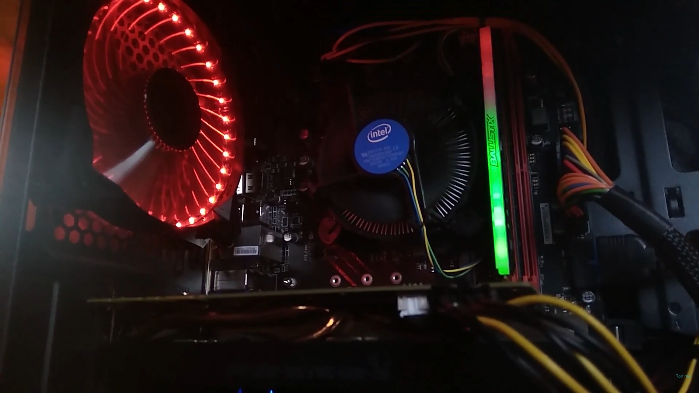

My history with IT
I became interested in IT from assembling my first computer in the summer of 2019. I've learned a lot since then. For example:
I can assemble a PC myself and choose the right components for it. Also, among other things, I know the basics of the HTML programming language (using which, for example, I created this website myself). I also know the basics of Python the programming language.

Photo of the inside of my old PC